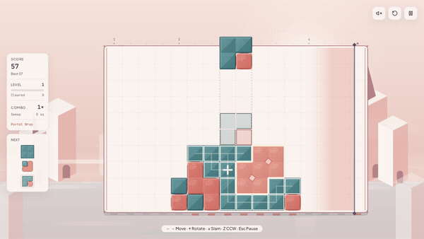
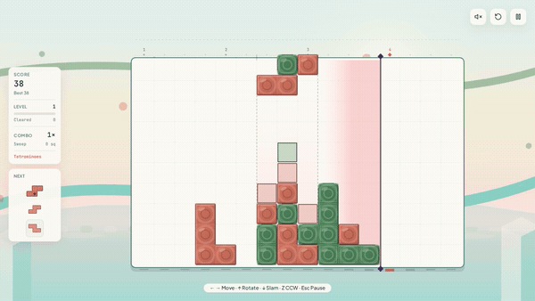
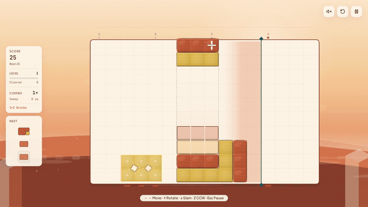

What if your favorite beat-matching brick dropper rewrote its own rules every time you leveled up?
Iluminado takes the hypnotic 2×2 rhythm-sweep flow inspired by Lumines and turns the playfield into a living, shifting instrument. Drop dual-color bricks, build glowing single-color squares, and let the tempo-locked timeline beam sweep them away in bursts of score multipliers.
Just when your hands find a groove, a Shift fires—warping brick shapes, rotating the entire board 90°, splitting the timeline in half, or turning gravity sideways.

52 Shifts That Rewrite the Game
No two runs stay polite for long. Every level triggers a curated rule mutation from a catalog of 52 playable Shifts—or open the Board Shift Rules codex before starting to customize your favorite mix.
Swap standard 2×2 blocks for classic Tetrominoes (I, O, T, S, Z, J, L), nimble 2×1 Dominoes, heavy 3×2 Slabs, Chameleon Rotation, or chained Wild Prism tiles.
Spin the entire courtyard 90° mid-run into a tall vertical shaft, expand or shrink the grid, carve a Split Canyon chasm, or face Cyclotron Orbit gravity rotating clockwise every drop.
Reverse the sweep beam's direction, split it into staggered Top & Bottom Half-Sweeps, tilt it into a Diagonal Slant, or illuminate blocks with a roving Lantern Spotlight.
Unlock a 3rd Block Color mid-run, break Obsidian Blocker cells by clearing beside them, bank pieces with Hold / Stash, or dodge mid-air Patrolling Bumpers.

50 Worlds, 50 Genre-Fusion Soundtracks
Every stage opens onto an illustrated world with its own tactile tile material, particle geometry, color spectrum, and an original full-length soundtrack built around bold futuristic genre crossovers—from Glass Zouk × Choral IDM × Dub and Clockwork Swing × Glitch × Gamelan to Liquid Bachata × Vapor × Cello and Harlequin Glitch × Swing × Acid-Pop.
- Quantized Musical Feedback — Steering, rotating, landing, and chain clears trigger harmonic chimes locked in key with each world's tempo and scale.
- Visual Rhythm Telemetry — Subtle architectural motion, sweep glow, and score popups pulse right on the measure without distracting HUD clutter.

7 Distinct Modes
| Mode | What Awaits |
|---|---|
| Challenge | Journey across worlds as Shifts stack on every level—play Basic, Endless, Shuffle, or pressure-free Zen Flow. |
| Daily Challenge | A deterministic world and Shift sequence generated fresh every 24 hours so everyone races the same board. |
| Time Attack | 60s, 180s, or 300s pure clear sprints with split-pace tracking. |
| Puzzle | Sculpt deliberate silhouettes—like Pastel Archway, Sand Hourglass, and Monument Crown—against the clock. |
| Mission | Tactical micro-challenges with preset stacks (4-square single sweeps, full board clears, monochrome leftovers). |
| VS CPU | Head-to-head duel against an adaptive AI solver—big clears launch garbage pressure across the center line. |
| 2P Battle | Shared-screen local versus battle on one keyboard or browser window. |
Controls
| Action | Solo Keyboard | 2P Battle (P1 / P2) | Touch / Mobile |
|---|---|---|---|
| Move Left / Right | ← → or A D | A D / ← → | Drag horizontally or tap arrow controls |
| Rotate CW / CCW | ↑ W Space X / Z | W Q / ↑ | Tap board or rotate buttons |
| Hard Drop / Slam | ↓ S C Shift | S L-Shift / ↓ R-Shift / | Swipe down or tap drop button |
| Hold / Stash Piece | C or Shift (when Stash Shift active) | — | Tap Hold slot |
| Pause / Mute | Esc or P · M | Esc · M | Top-right Pause & Sound icons |